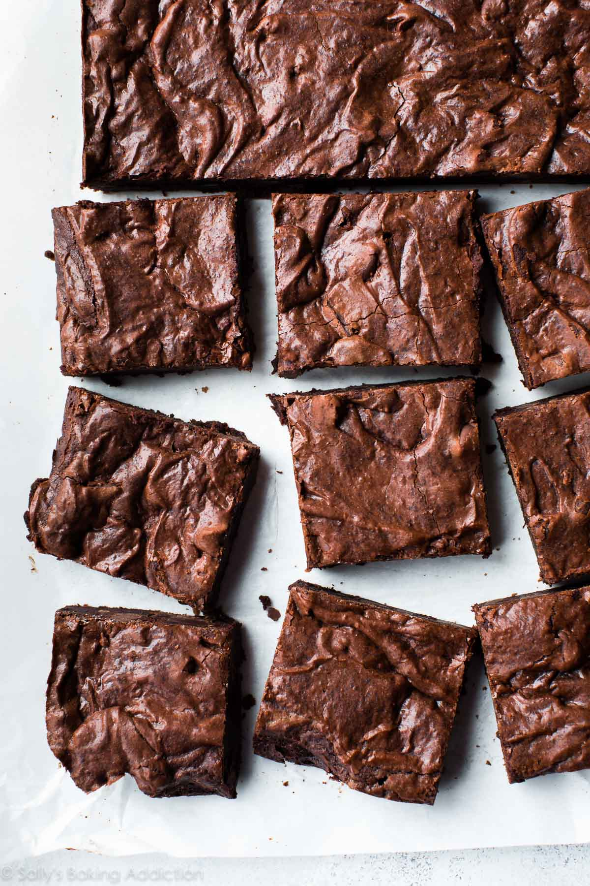

Description
Bake these easy brownies whenever you need to quickly satisfy your sweet tooth. Made with kitchen staples, you'll come back to this easy brownie recipe again and again.
Ingredients
- Sugar: These easy brownies start with two cups of white sugar.
- Flour: All-purpose flour creates structure in the batter.
- Butter: Two sticks of melted butter give the brownies moisture and richness.
- Eggs: Eggs lend even more moisture. Plus, they help bind the batter together.
- Cocoa powder: Of course, you'll need cocoa powder for chocolate brownies!
- Vanilla: Vanilla extract enhances the overall flavor of the brownies.
- Baking powder: Baking powder acts as the leavener, which helps the brownies rise.
- Salt: A pinch of salt enhances the flavors of the other ingredients.
- Walnuts: Nuts are optional, of course, but they add a welcome crunch.
Steps
- Preheat the oven to 350 degrees F (175 degrees C). Grease a 9x13-inch pan.
- Mix sugar, flour, melted butter, eggs, cocoa powder, vanilla, baking powder, and salt in a large bowl until combined.
Spread the batter into the prepared pan. Decorate with walnut halves.
- Bake in the preheated oven until top is dry and edges have started to pull away from the sides of the pan, about 20 to 30 minutes; cool before slicing into squares.